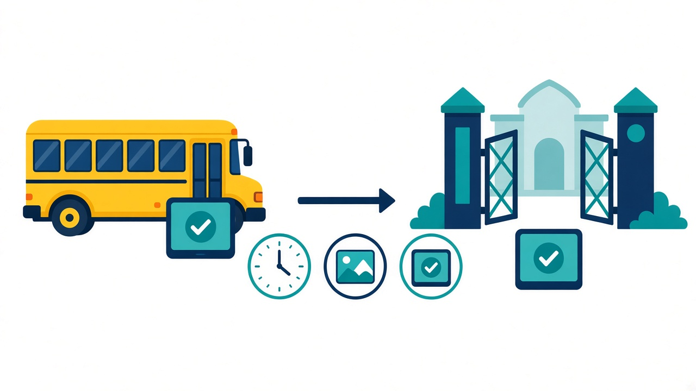
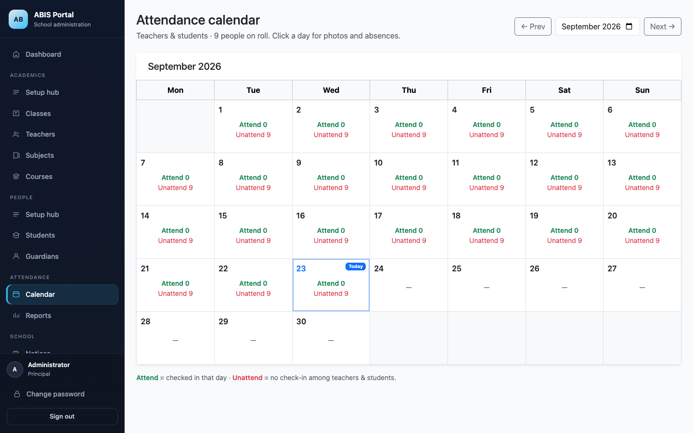
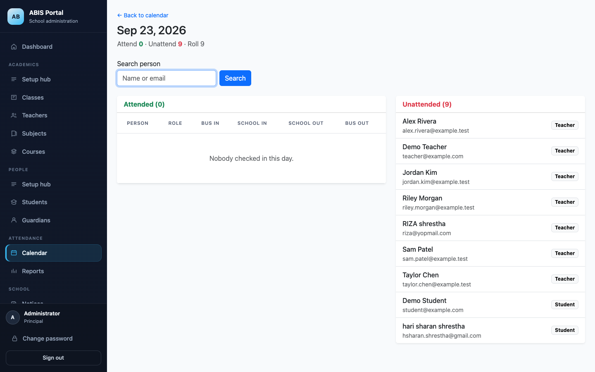
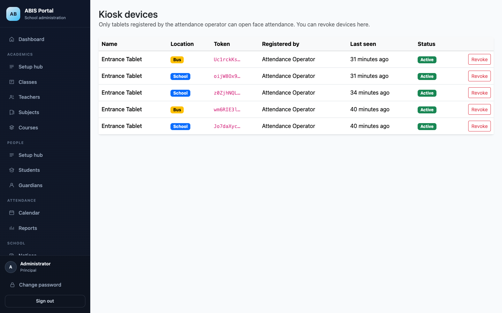
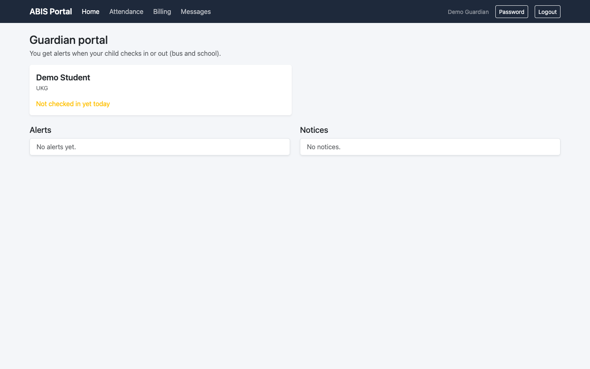
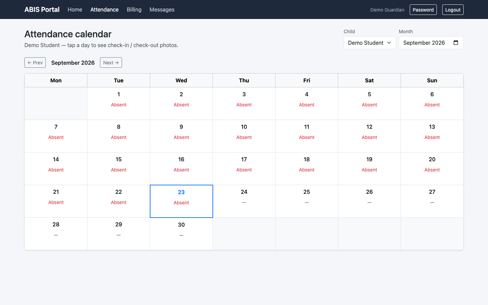

School & bus kiosks, photo-backed records, admin calendar, and guardian alerts. 学校・バスのキオスク、写真付き記録、管理カレンダー、保護者アラート。
System Engineer · Senmonkyoiku (NAT Test branch office, Chiba) システムエンジニア · 専門教育（NAT Test 千葉支店）

Board bus kiosk → guardians notified
School gate kiosk after bus check-in
School checkout before return bus
Final bus scan completes the day





| Feature / 機能 | English | 日本語 |
|---|---|---|
| Face kiosk | Camera match + photo capture | 顔照合＋写真保存 |
| Bus / school | Ordered in/out for bus riders | バス利用者の順序付き入退 |
| Admin calendar | Monthly attend / unattend rollup | 月次の出席・未出席集計 |
| Day search | Filter attended & unattended people | 出席／未出席の人物検索 |
| Device control | Register / revoke school & bus tablets | 学校・バスタブレットの登録／取消 |
| Guardian alerts | Notifications + paginated history | 通知＋ページング付き履歴 |
Face kiosks for school & bus · photo records · admin oversight · guardian peace of mind
学校・バスの顔認証キオスク · 写真付き記録 · 管理者の可視化 · 保護者への安心通知